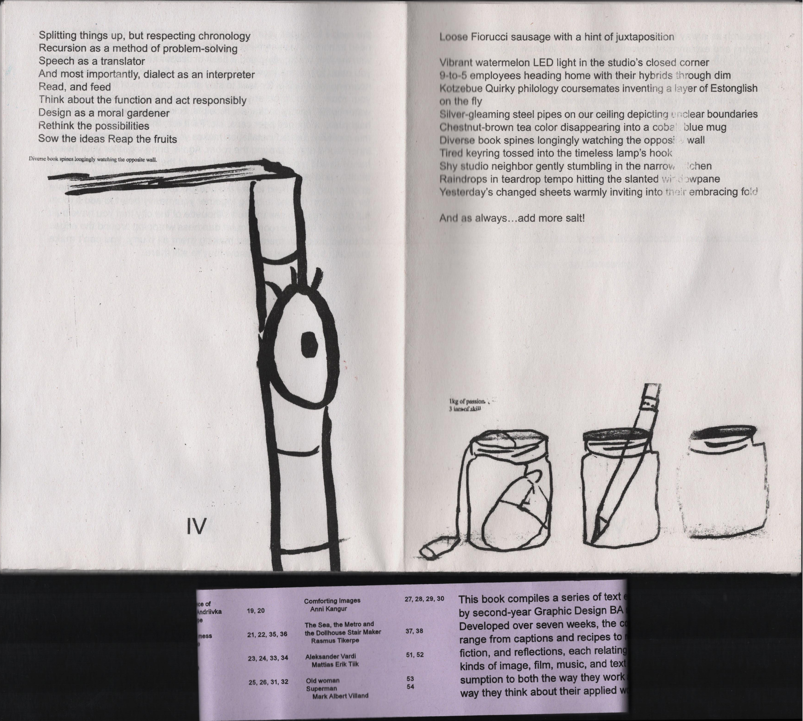

Graphic Design · EKA student project · Research · 2025
For my graphic design theory course, I chose to pursue a research-based text rather than a conceptual analysis of my own design practice. The study focuses on the first four pro model snowboards and their graphics made specifically for women, tracing a largely undocumented chapter of snowboard history.
What made this research particularly challenging and rewarding was the scarcity of formal sources. Very little has been written about early women's pro, which meant the bulk of my material came from unconventional places: Facebook collector groups, eBay listings and some articles mentioning them. In a way, the research itself became an important part of the story, reminding how easily women's contributions to the snowboarding industry get overlooked or left out of the record.
The project sits at the intersection of design history, gender studies, and material culture. Their graphics were visual statements about how the industry chose to represent women at a pivotal moment in snowboarding's commercialization during the late 1980s and early 1990s.
The second page of the submission consisted of screenshots documenting my sources, capturing the Facebook group posts, eBay listings, and other online traces that formed the foundation of this small research. Since so much of this material exists in informal and fleeting corners of the internet, screenshotting and preserving it felt like a natural part of the process.
Read the full text here →

